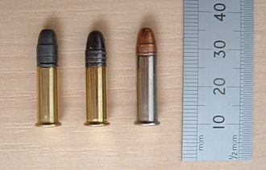

22 caliber, or 5.6 mm, refers to a common firearms bore diameter of 0.22 inch (5.6 mm) in both rimfire and centerfire cartridges.
Cartridges in this caliber include the very widely used .22 Long Rifle and .223 Remington/5.56x45mm NATO.
.22 inch is also a popular air gun pellet caliber, second only to the ubiquitous .177 caliber.
